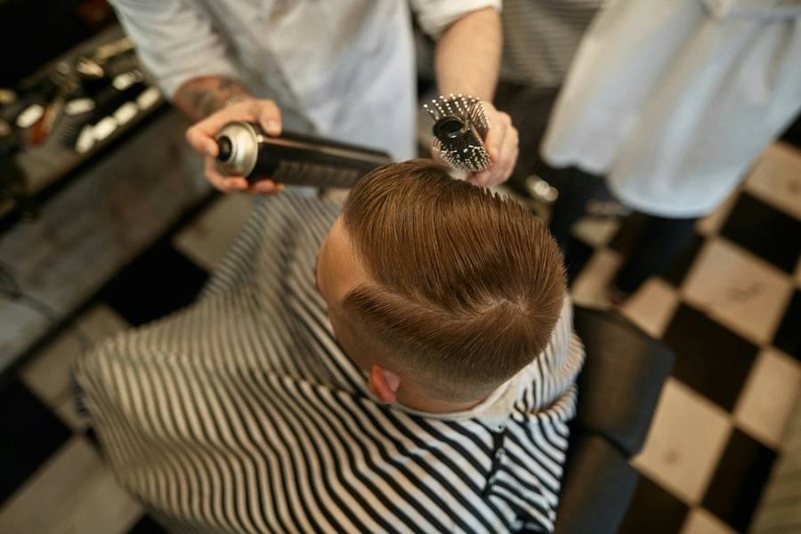
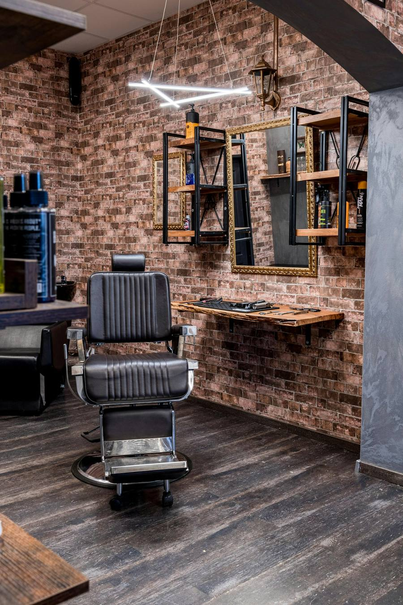
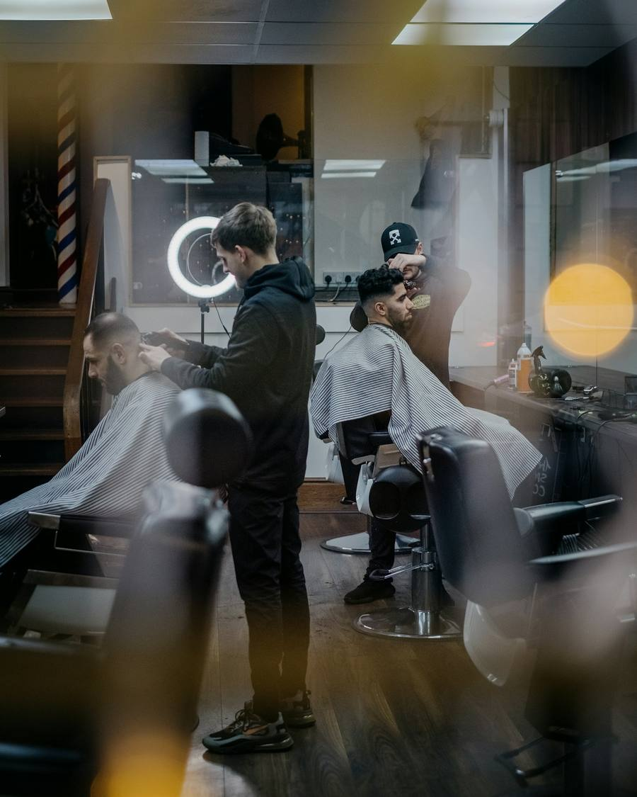

Hizmetler ve fiyatlar
Fiyatlar kapıda ne görürseniz o. Sürpriz yok.
- Saç kesimiYıkama ve şekillendirme dahil400 TL
- Sakal tıraşıSıcak havlu ve ustura200 TL
- Saç ve sakal550 TL
- Çocuk saç kesimi12 yaş altı300 TL
- Cilt bakımıTemizlik, maske ve masaj450 TL
- Damat tıraşıSaç, sakal, cilt bakımı ve fotoğraf için hazırlık2.500 TL
Salondan
Gerçek sitede burada sizin salonunuzun ve işlerinizin fotoğrafları yer alır.



Saatler ve konum
Haritada ", " araması görünüyor. Gerçek sitede açık adresiniz burada yazar.